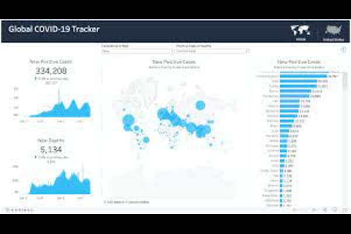
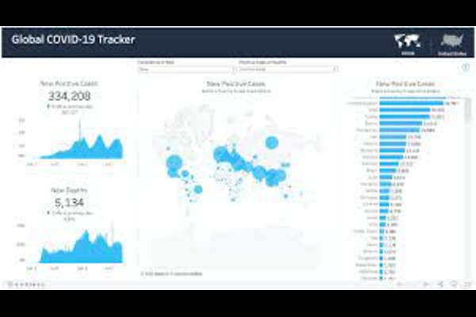

This SQL project meticulously cleans the Nashville Housing dataset by standardizing date formats, resolving missing property addresses, transforming binary indicators, and removing duplicates.The project also involves transforming binary indicators like "Sold as Vacant" from 'Y' and 'N' to 'Yes' and 'No.' Additionally, duplication removal strategies, such as the use of ROW_NUMBER(), ensure data consistency. The process concludes with the removal of unused columns, streamlining the dataset for more efficient and meaningful analysis. The streamlined dataset promotes enhanced analysis and insights.
 

This project delves into Covid-19 data exploration, showcasing a mastery of SQL skills such as Joins, CTEs, Temp Tables, Windows Functions, Aggregate Functions, and creating Views. This shpwcase an analysis of assessing total cases and deaths to examining infection rates against population sizes. Continent-specific breakdowns, global statistics, and vaccination trends are explored, offering a wider perspective on the pandemic's impact.

This project focused on predicting home prices in Bangalore using regression analysis on a Kaggle-sourced dataset. Key steps included data exploration, cleaning, and feature engineering, with emphasis on bedroom count, square footage, and location. After building and testing several models, Linear Regression emerged as the most effective. The finalized model was a successful application of data science techniques to enhance real estate analytics

This project focuses on font-independent recognition of printed text in Urdu. This system has the ability to grab text from image including both actual photos you have taken and screenshots of Machine Printed text you have captured. The purpose of this project is to recognise text in scanned documents, text images and any picture taken by an android based device in order to reuse it later.